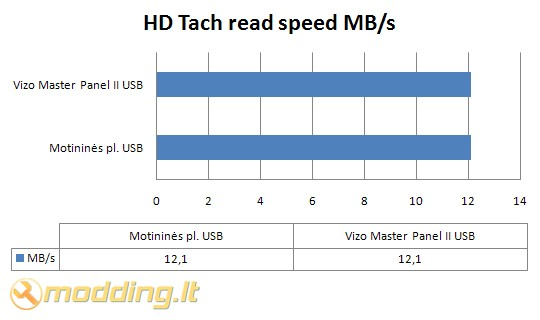

Vizo Master Panel II
Jei kompiuterio korpuso priekinėje dalyje nėra USB išvesties - nuolat tenka sugaišti šiek tiek laiko, norint pajungti USB raktą ar kortelių skaitytuvą. Naujuose korpusuose gamintojai stengiasi pagrindines jungtis, tokias kaip USB ar eSATA, išdėstyti korpuso priekyje, kad netektų kas kartą viską pajunginėti galinėje korpuso sienelėje. Tačiau ką daryti, jei korpuso USB lizdai tik galinėje sienelėje, o kompiuterio korpusas stovi specialiame, kompiuteriui skirtame stale, ir išiminėti jį kas kartą yra nepatogu? Laimei, yra įrenginiai, kurie žymiai supaprastina kai kurių įrenginių pajungimą prie PC. Vienas iš jų - Vizo Master Panel II. Tai įrenginys, kuriame integruotas USB, kortelių skaitytuvas, Audio išvestys, eSATA jungtys bei aušintuvų apsukų reguliatorius.
Žvilgsnis iš arčiau
Vizo Master Panel II pakuotės priekinėje dalyje pavaizduotas įrenginys, galinėje dalyje - išsamiai aprašomos jo specifikacijos, panaudojimo galimybės bei pakuotės turinys.
- Master Panel II panėlę
- maitinimo adapterį
- ventiliatorių laidus
- USB laidą
- MIC laidą
- IEEE 1394 FireWire laidą
- Line in/out laidą
- SATA laidą
- RCA laidą
- tvirtinimo priedus
- tvarkyklių CD
- vartotojo knygelę
Specifikacijos
- Montuojamas į 5.25 stalčių
- Išmatavimai: 70(ilgis) x 148(plotis) x 42(aukštis) mm
- Kortelių skaitytuvo interfeisas: USB 2.0
- Maitinimas: USB power / DC 12V, 5V
- Kortelių skaitytuvas: 4 slotai skirti Compact Flash Type I/II, Micro Driver, Memory Stick(Duo*), Memory Stick Pro(Duo*), Smart Media, SD, mini SD*, Multi Media card, RS-MMC*, microSD* ( * - reikalingas adapteris)
- Ventiliatorių reguliatorius: 3pin kištukai, RPM reguliuojančios varžos (4V-12V)
- Jungtys: eSATA, IEEE 1394 FireWire, Mic, Audio In, Audio Out
Vizo Master Panel II panėlė pagaminta iš juodos plastmasės, jungtys pažymėtos užrašais. Viršutiniame dešiniame kampe išdėstyti du ventiliatorių apsukų reguliatoriai. Apačioje - skirtingų spalvų Mic bei Audio kištukai. Kairėje pusėje du USB lizdai. Viršuje išdėstyti kortelės skaitytuvo lizdai. Įrenginio šonuose yra po tris skyles tvirtinimui. Panėlė tvirtinama varžtais.
Montavimas
Vizo Master Panel II įrenginys montuojamas į 5.25 stalčių, šonuose prisukamas varžtais. Pateikiu sumontuoto įrenginio foto.
Rezultatai
Testavimo sistema:
- CPU Cooler - Noctua NH-U12P SE2
- Case - Antec Mini P180
- Mainboard - Asus M2N68-AMSE2
- CPU - AMD ATHLON 64 X2 Dual-Core 5000+ AM2 (65W)
- RAM - Corsair DDR2 KIT 2X1G 800MHZ TWIN2X2048-6400 G
- HDD - SEA BARRACUDA 160GB 7200rpm
- PSU - Cooler Master Silent Pro M700
- Case Fans - Noctua NF-S12B FLX 120mm (1200rpm, 100.6 m³/h, 1.31 mm H2O), Antec 200mm TriCool (400rpm, 39 CFM)

Testuose tiek Vizo Master Panel II, tiek motininės plokštės lizdo USB greičiai vienodi - po 12,1 MB/s. Tai reiškia, kad Master Panel II įrenginys yra kokybiškas ir neatsirado greičio nuostolių.
Išvados
Pliusai:
- kokybiškas
- integruotas kortelių skaitytuvas
- galimybė reguliuoti dviejų ventiliatorių apsukas
- nerasta
 Vizo Master Panel II įrenginys gali gerokai palengvinti naudojimąsi PC. Jis korpuso priekinėje dalyje padaro prieinamomis pagrindines jungtis, tokias kaip USB ar Audio - tai patogu, jei turite senesnio modelio korpusą, kuriame šių jungčių priekinėje korpuso dalyje nėra. Įrenginys pravers tiems, kas dažnai naudojasi išorinėmis duomenų laikmenomis, ar žaidžia kompiuterinius žaidimus ir tam naudoja mikrofonus bei ausines. Patiko sprendimas panėlėje integruoti du ventiliatorių apsukų reguliatorius - manau šis papildymas Vizo Master Panel II įrenginiui suteikia gerokai daugiau universalumo. Vizo Master Panel II kaina siekia ~ 85 Lt. Tai nėra pigu, tačiau tiems, kam reikalingos pagrindinės jungtys korpuso priekinėje dalyje, turėtų apsvarstyti šio gaminio kandidatūrą.
Vizo Master Panel II įrenginys gali gerokai palengvinti naudojimąsi PC. Jis korpuso priekinėje dalyje padaro prieinamomis pagrindines jungtis, tokias kaip USB ar Audio - tai patogu, jei turite senesnio modelio korpusą, kuriame šių jungčių priekinėje korpuso dalyje nėra. Įrenginys pravers tiems, kas dažnai naudojasi išorinėmis duomenų laikmenomis, ar žaidžia kompiuterinius žaidimus ir tam naudoja mikrofonus bei ausines. Patiko sprendimas panėlėje integruoti du ventiliatorių apsukų reguliatorius - manau šis papildymas Vizo Master Panel II įrenginiui suteikia gerokai daugiau universalumo. Vizo Master Panel II kaina siekia ~ 85 Lt. Tai nėra pigu, tačiau tiems, kam reikalingos pagrindinės jungtys korpuso priekinėje dalyje, turėtų apsvarstyti šio gaminio kandidatūrą.
Modding.lt komanda dėkoja Amor Chen iš www.vizo.com.tw už apžvalgai suteiktą produktą.
Jei norėsite pakomentuoti mano straipsnį arba pareikšti savo nuomonę, apsilankykite Modding.lt forume.


{kind=link}
{kind=link}
{kind=link}
{kind=link}
{kind=link}
{kind=link}
{kind=link}
{kind=link}